| Model | Calendar year introduced |
Current model | Vehicle description | |||
|---|---|---|---|---|---|---|
| Introduction | Update/facelift | |||||
| Cars | ||||||
| 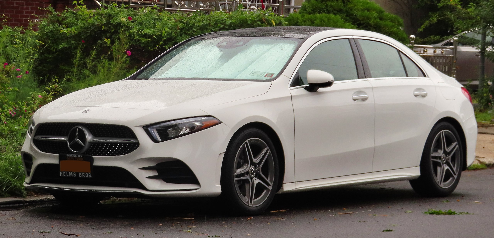 | A-Class | 1997 | 2018 | – | C-segment/Subcompact executive sedan and hatchback. | |
| B-Class | 2005 | 2018 | – | MPV. | ||
| C-Class | 1993 | 2021 | – | D-segment/compact executive sedan and station wagon. | ||
| CLA-Class | 2013 | 2019 | – | C-segment/subcompact executive fastback sedan and station wagon. | ||
| 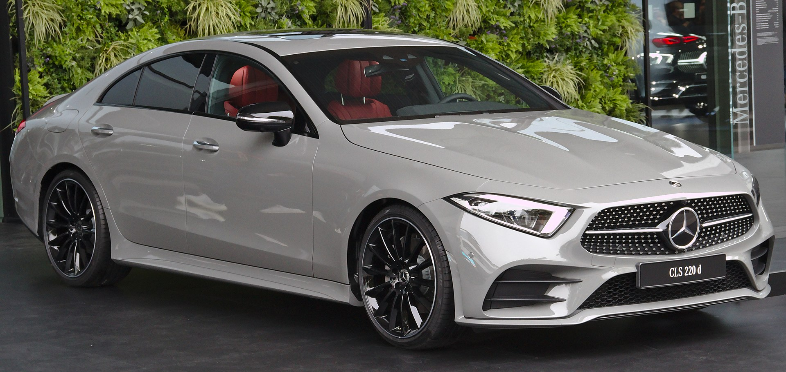 | CLS-Class | 2004 | 2018 | – | E-segment/executive fastback sedan. | |
| 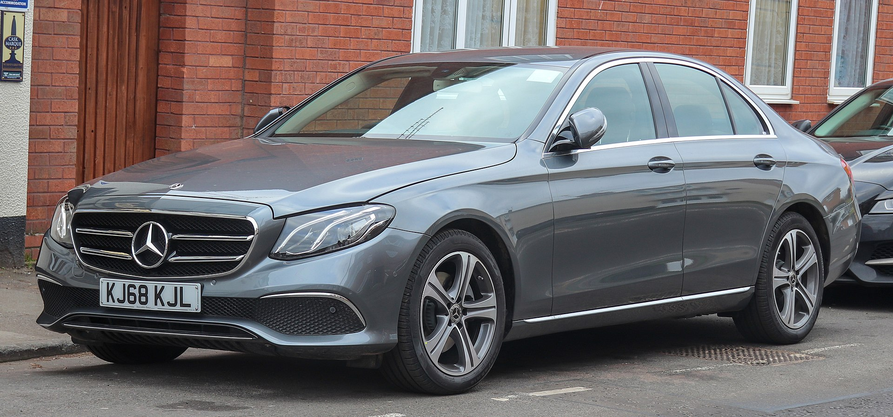 | E-Class | 1953 | 2017 | 2021 | E-segment/executive sedan, station wagon, coupe and convertible. | |
| 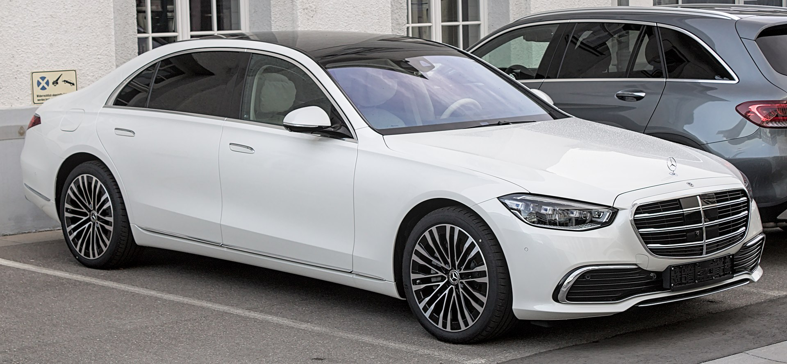 | S-Class | 1954 | 2020 | – | F-segment luxury sedan. | |
| 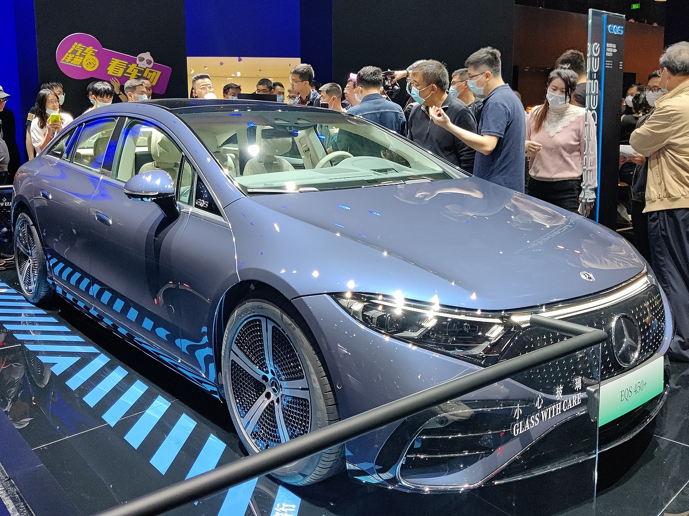 | EQS | 2021 | 2021 | – | All-electric full-size luxury liftback sedan. | |
| Crossovers/SUVs | ||||||
| 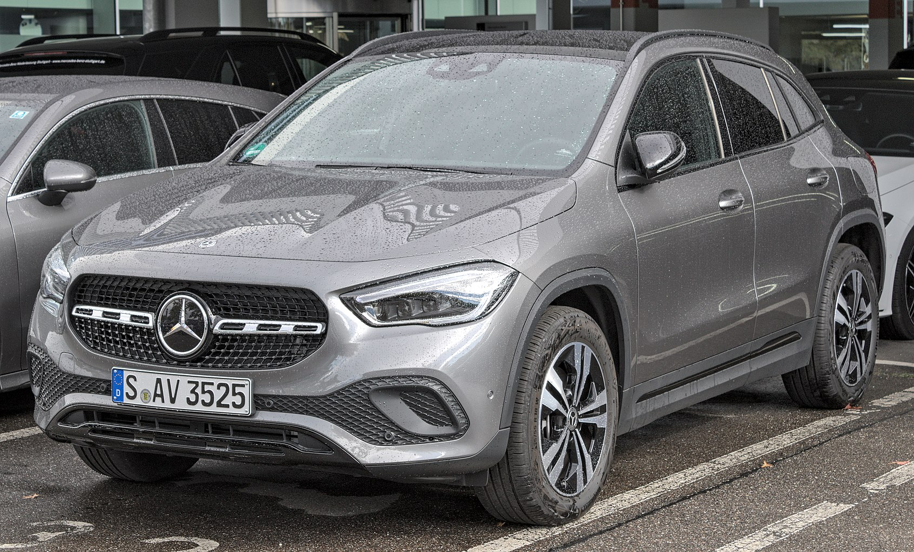 | GLA-Class | 2013 | 2020 | – | C-segment/subcompact luxury crossover SUV. | |
| 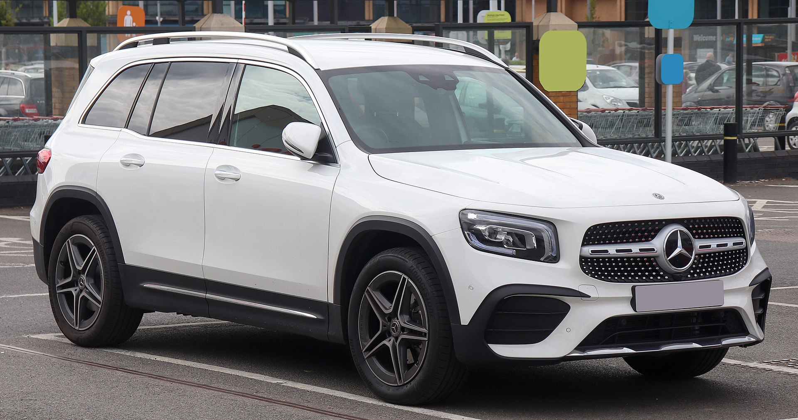 | GLB-Class | 2019 | 2019 | – | C-segment/compact luxury crossover SUV. | |
| GLC-Class | 2015 | 2015 | 2020 | Compact luxury crossover SUV/coupe SUV. | ||
| 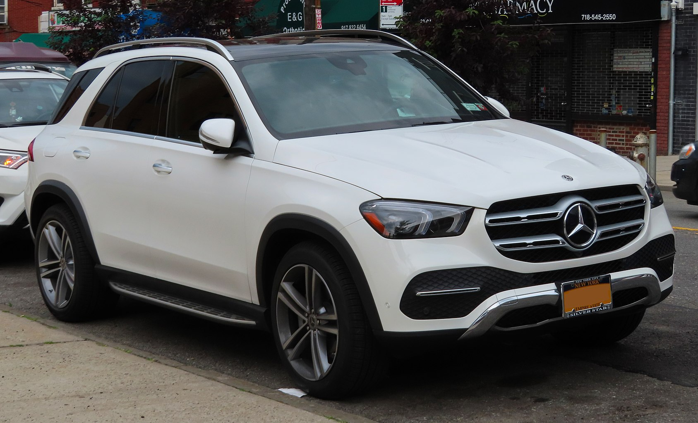 | GLE-Class | 1997 | 2019 | – | Mid-size luxury crossover SUV. Formerly the M-Class until 2015. | |
| 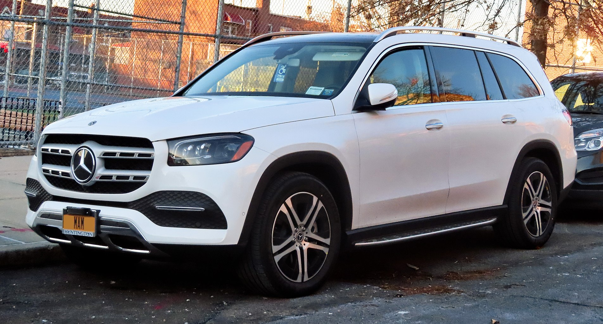 | GLS-Class | 2006 | 2020 | – | Full-size luxury SUV. Formerly the GL-Class until 2015. | |
| 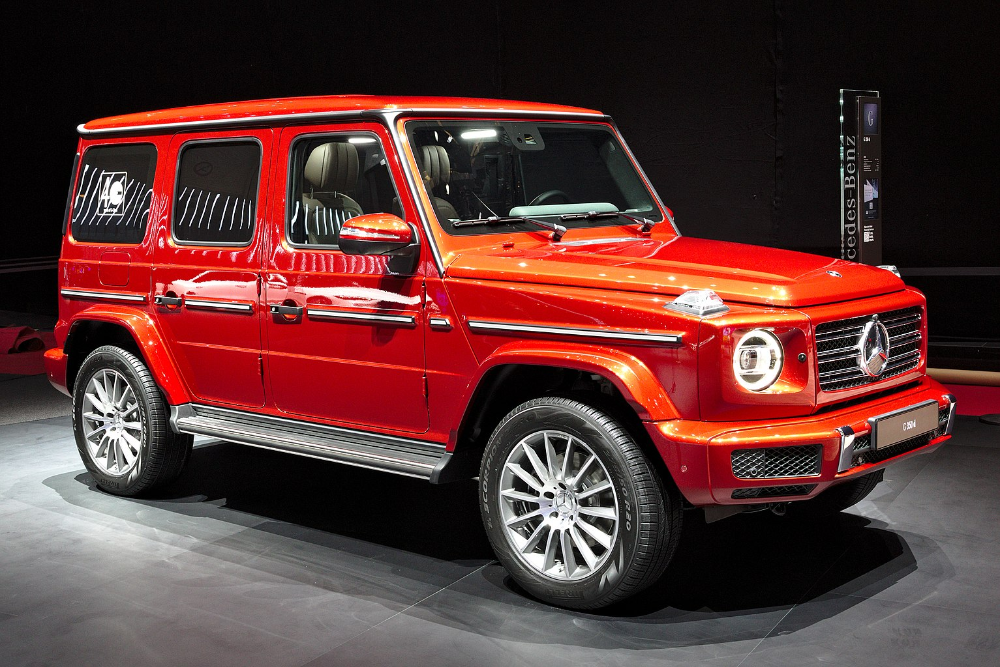 | G-Class | 1979 | 2018 | – | Mid-size luxury SUV. Commonly known as the G-Wagen. | |
| 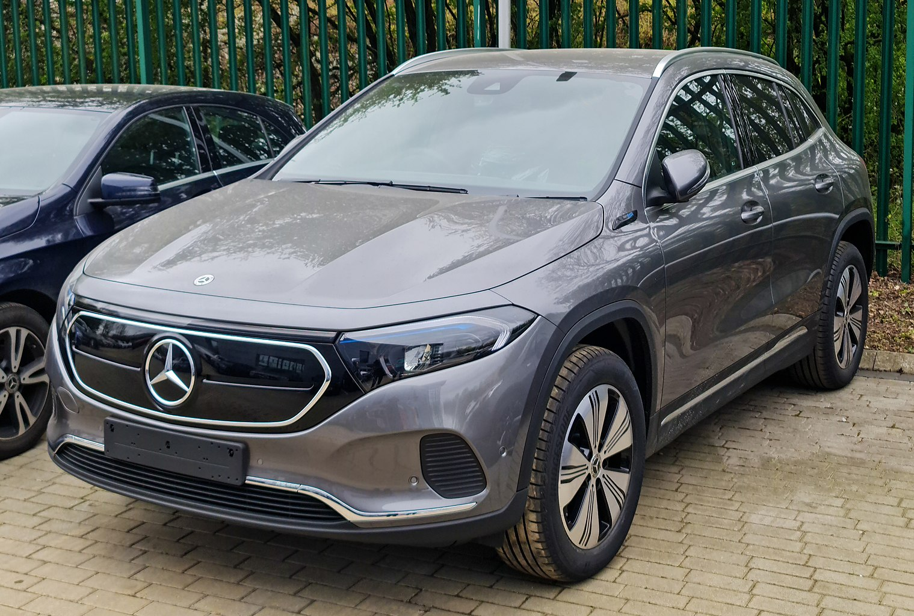 | EQA | 2021 | 2021 | – | All-electric subcompact luxury crossover SUV. | |
| 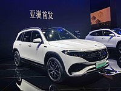 | EQB | 2021 | 2021 | – | All-electric subcompact luxury crossover SUV. | |
| 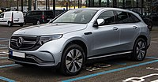 | EQC | 2019 | 2019 | – | All-electric compact luxury crossover SUV and the first member in the new Mercedes-Benz EQ lineup of electric vehicles. | |
| 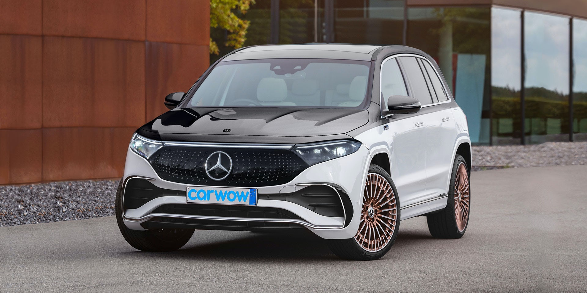 | EQS SUV | 2021 | 2021 | – | All-electric full-size luxury SUV. | |
| Roadsters/Sports cars | ||||||
| SL-Class | 1954 | 2012 | 2017 | Front-engine, rear-wheel-drive two-seater grand tourer sports coupe and roadster. | ||
| 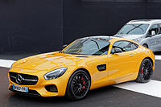 | AMG GT | 2014 | 2014 | 2017 | Front mid-engine, rear-wheel drive two- and four-seater grand tourer coupe and roadster. | |
| AMG GT 4-Door Coupé | 2018 | 2018 | – | Front-engine, rear-wheel-drive 5-door liftback sedan. | ||
| 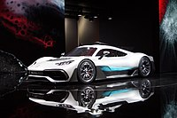 | AMG One | 2021 | 2021 | – | Rear mid-engine, all-wheel-drive limited-production plug-in hybrid sports car. Concept model pictured. | |
| Van | ||||||
| Vito | 1996 | 2014 | – | Light commercial vehicle (Vito) and minivan (V-Class/Viano). | ||
| 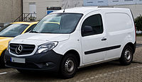 | Citan | 2012 | 2022 | – | Panel van and leisure activity vehicle, a rebadged and restyled Renault Kangoo. | |
| 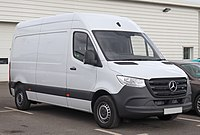 | Sprinter | 1995 | 2019 | – | Light commercial vehicle and large van. Also marketed by Freightliner Trucks as the Freightliner Sprinter from 2001-2021 and by Dodge as the Dodge Sprinter from 2003-2009. | |
| EQV | 2020 | 2020 | – | All-electric version of the Vito. | ||
| Commercial trucks | ||||||
| 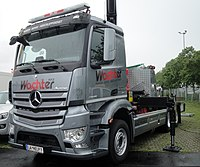 | Antos | 2013 | 2013 | – | Heavy-duty truck. | |
| Arocs | 2013 | 2013 | – | Heavy-duty truck. | ||
| 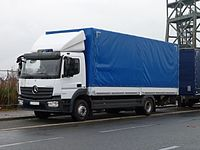 | Atego | 1998 | 2013 | – | Rigid truck. | |
| Actros | 1996 | 2011 | 2019 | Heavy-duty truck. | ||
| 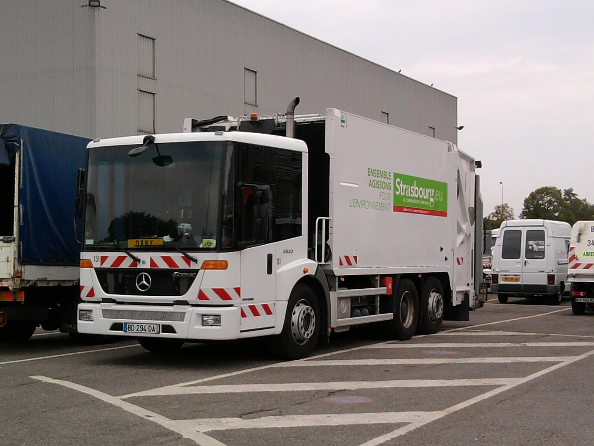 | Econic | 1998 | 1998 | – | Low-entry truck. | |
| 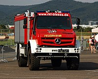 | Unimog | 1948 | 2013 | – | All-wheel-drive medium-duty trucks. | |
| 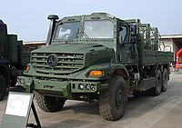 | Zetros | 2008 | 2008 | – | Off-road truck. | |
| Buses and | ||||||
| Citaro | 1997 | 2011 | – | Single-deck integral bus. | ||
| 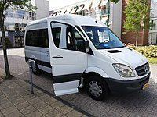 | Sprinter | 1995 | 2019 | – | Passenger minibus version of the Sprinter. | |
| 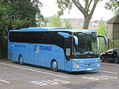 | Tourismo | 1994 | 2017 | – | Single-deck integral coach. | |
| Model | Calendar year introduced |
Current model | Vehicle description | |||
| Introduction | Update/facelift | |||||
{kind=link}
{kind=link}
{kind=link}
{kind=link}
{kind=link}
{kind=link}
{kind=link}
{kind=link}
{kind=link}
{kind=link}
{kind=link}
{kind=link}
{kind=link}
{kind=link}
{kind=link}
{kind=link}
{kind=link}
{kind=link}
{kind=link}
{kind=link}
{kind=link}
{kind=link}
{kind=link}
{kind=link}
{kind=link}
{kind=link}
{kind=link}
{kind=link}
{kind=link}
{kind=link}
{kind=link}
{kind=link}
{kind=link}
{kind=link}
{kind=link}
{kind=link}